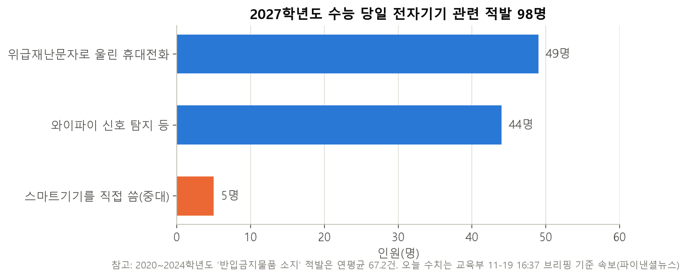
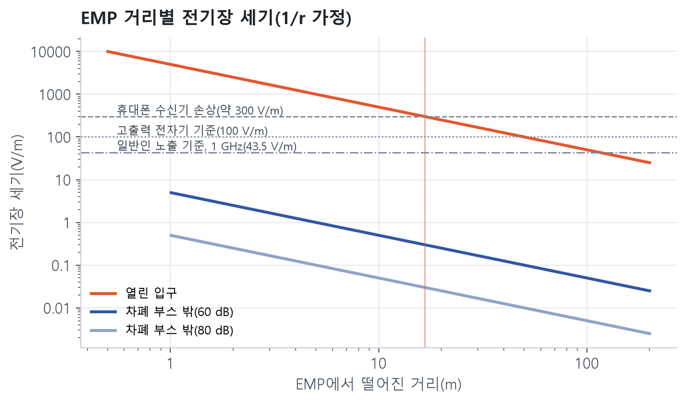
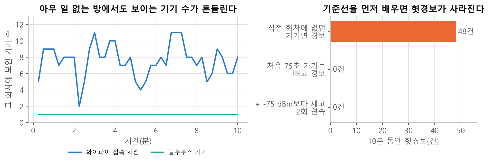
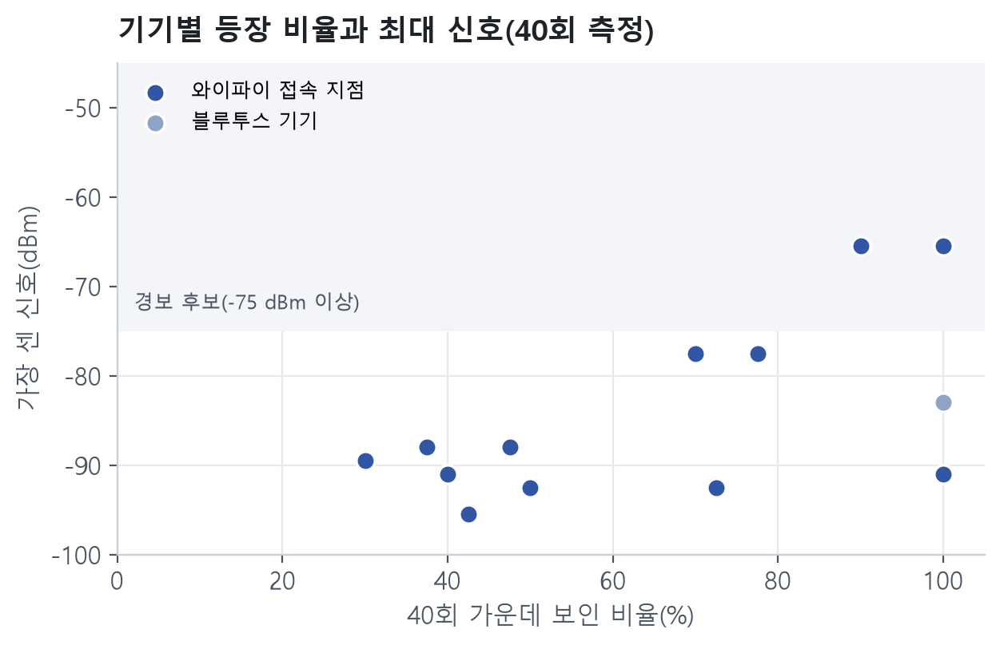

1 / 1,174건
2020~2024학년도 무선기기 이용 적발
98명
2027 수능 당일 전자기기 관련 적발
4 / 7건
2026년 AI 부정행위 현장 적발
01 문제
AI 부정행위 7건 중 현장 적발 4건

세무사 시험 수석 합격자: 감독위원 2명 앞에서 초소형 카메라와 생성형 AI 사용, 본인 시인 후에야 드러남
- 82.3% AI 스마트안경 식별이 어렵다는 교원 비율(2,716명 설문)
- 약 11만 원 온라인 판매 AI 커닝 세트 가격(단추 카메라, AI 풀이, 초소형 이어폰)
- 551,864명 2027학년도 수능 지원자, 시험장 1,312곳
자료: 연합뉴스 2026-11-16, 한국경제 2026-06-10, MTN 2026-11-16(전교조 설문), 주간경향 2026-11-16, 프레시안 2026-09-08
02 사용 데이터와 정제
데이터 5종, 원문 대조된 수치만 사용
| 데이터 | 출처 | 정제 |
|---|---|---|
| AI 기사 메타데이터 103,482건(2024.1~6) | 공공데이터포털 15155969(한국언론진흥재단) | 키워드 방식과 로컬 AI 방식으로 시험 부정행위 기사 선별, 사람이 최종 확인 |
| 수능 부정행위 통계(연도별, 유형별, 2027 수능 당일) | 교육부 발표 보도(뉴시스, 뉴스1, 파이낸셜뉴스) | 원문 대조 수치만 사용, 2020학년도는 5년 합계에서 계산 |
| AI 부정행위 사례, 교원 설문, 장비 가격 | 연합뉴스, 한국경제, MTN, YTN, 주간경향 | 행마다 출처 표시, 원문 대조 |
| 전자파 기준값 | ICNIRP 1998, IEC 61000-2-13 인용 문헌 | 1 GHz 노출 기준, 펄스 순간 최대 계산 |
| 무선 신호 기준선(10분, 40회) | 직접 측정(노트북 와이파이, 블루투스) | 기기 주소 해시 처리, 신호 %를 dBm으로 환산 |
뉴스 정제
- 키워드 방식: 제목, 키워드, 본문에 부정행위 낱말과 시험 낱말이 함께 나온 기사 44건 → 사람 확인 13건
- 로컬 AI 방식: 임베딩 모델로 103,482건 의미 검색(RTX 5090, 74초) → 유사도 상위 500건 → 재순위 모델 판정 상위 20건 → 사람 확인 11건

03 분석 결과
무선기기 적발 5년간 1건, 2027 수능 당일 98명


자료: 교육부(뉴시스, 2020~2024학년도 유형별), 교육부 11-19 16:37 브리핑(파이낸셜뉴스)
04 해결 방안
시험실이 아닌 교문 4중 검문
- 1
EMP
소지품 1회, 몸 1회. 신고 휴대전화는 차폐 파우치 보관 후 진행
- 2
전파 탐지
영상, 답을 주고받는 송신 기기 탐지
- 3
금속 탐지
전원 꺼진 기기, 저장만 하는 기기 탐지
- 4
무선 감시
당일 아침 기준선 학습 후 새로 켜진 기기만 경보
| 수법 | 차폐 보관 | EMP | 금속 탐지 | 무선 감시 |
|---|---|---|---|---|
| AI 안경 | 보관 | ● | ● | ● |
| 초소형 카메라, 무선 이어폰 | 보관 | ● | ● | ● |
| 숨긴 스마트폰 | 보관 | ● | ● | ● |
| 스마트워치 | 보관 | ● | ● | ● |
| 저장만 하는 카메라 | 보관 | ● | ● | × 송신 없음 |
● 잡음 보관 신고 기기는 차폐 파우치 보관 × 못 잡음
의료기기: 심박조율기, 인공와우, 인슐린 펌프는 사전 신청, 진료확인서로 별도 통과
숨긴 금지 기기 손상: 반입 금지 규정 위반이라 배상 근거 약함
05 검증
EMP는 차폐 부스 안, 무선 감시는 기준선 먼저

- 열린 입구: 16.7 m 안 휴대폰 수신기 손상 가능(300 V/m, 1/r 가정)
- 60 dB 부스: 1 m 밖 5 V/m, 인체 기준 43.5 V/m(1 GHz, ICNIRP 1998) 아래
- 남은 과제: 몸 단계 세기 검증(손상 세기가 ICNIRP 순간 최대 1,392 V/m의 2.2~7.2배)

- 빈 방 10분 측정(15초 간격 40회): 와이파이 기기 2~11개로 변동
- 직전 회차 비교 규칙: 헛경보 48건
- 처음 75초 기준선 학습: 헛경보 0건

비용(값을 아는 장비만)
80~120만 원
시험장 1곳: 금속탐지기 2대 20~40만 원, 전파탐지기 1대 60~80만 원, 무선 감시는 기존 노트북
10.5~15.7억 원
전국 시험장 1,312곳. EMP 부스, 차폐 파우치 가격 별도
자료: IEC 61000-2-13 인용 HPEM 문헌(손상 세기), ICNIRP 1998 Table 7(인체 기준), YTN 2026-11-18(장비 가격), 직접 측정 무선 기준선(2026-11-19)
06 AI 활용
사용 모델과 쓰임
| 모델 | 쓰임 |
|---|---|
| ChatGPT | 아이디어 다듬기, 반론 검토 |
| Claude Opus 5.5 (Claude Code) | 자료 수집, 원문 대조, 분석 코드, 그래프, PPT, 결과 페이지 제작 |
| snowflake-arctic-embed-l-v2.0-ko (로컬, RTX 5090) | 기사 103,482건 의미 검색(74초) |
| Qwen3-Reranker-0.6B (로컬) | 상위 500건 관련성 판정 |
작업 순서
- 자료 수집: Claude, 공공데이터와 기사 수치
- 뉴스 정제: 로컬 AI, 103,482건에서 20건
- 사람 확인: 기사 제목, 원문 대조
- 분석, 그래프: Claude, pandas와 matplotlib
- 검증: EMP 거리 계산, 무선 신호 측정
주요 프롬프트
- 자료 수집(Claude): 수능 부정행위 적발 수치와 2026년 AI 부정행위 사례 수집. 원문 기사에서 확인한 숫자만, 행마다 출처 주소
- 뉴스 정제(재순위 모델, 원문): 이 기사가 시험(수능, 대입, 자격시험, 대학 시험, 토익 등)에서 일어나는 부정행위, 커닝, 대리시험이나 그것을 감독하고 막는 일을 주로 다루는지 판단한다. 시험을 만드는 AI, 기업 감사, 금융 부정은 해당하지 않는다.
- EMP 계산(Claude): 거리별 EMP 세기 계산, 전자기기 손상 세기와 ICNIRP 1998 인체 기준 비교. 1/r 가정과 차폐 감쇠(dB) 그래프에 표시
AI 결과 수정 2건
| 처음 결과(AI) | 수정 |
|---|---|
| EMP 반대(법, 배상, 안전) | 사전 신청, 입구 실시, 배상 근거 약함으로 반박. 거리 계산 후 차폐 부스 추가 |
| 재순위 문턱 0.5에서 2건만 남음 | 문턱 대신 순위, 상위 20건 사람 확인 |
수치: 원문 기사와 대조 후 사용
정제 검증: AI가 고른 기사를 사람 판정 13건과 비교해 정밀도 측정
반대 의견: 대안 유무 확인 후 계산으로 검증
느낀 점
- AI가 고른 기사도 절반 가까이 엉뚱해 사람 확인이 필수였음
- AI의 반대 의견도 계산으로 따지니 차폐 부스라는 보완책이 됨
07 한계
남은 과제
- EMP 거리: 1/r 가정, 실제 부스 감쇠는 측정 필요
- 다음 실험: 휴대폰 핫스팟, 블루투스 이어폰 거리별 탐지율, 호일, 전자레인지 차폐 감쇠 측정